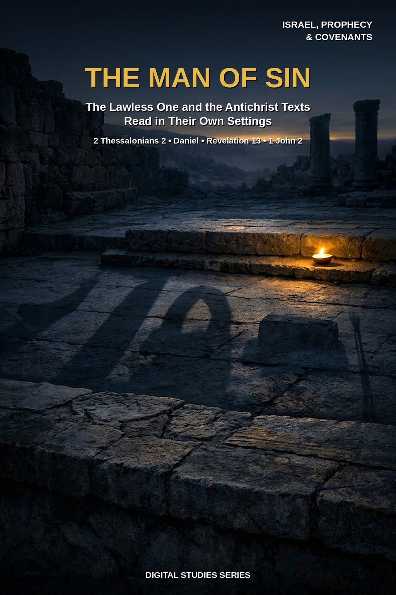
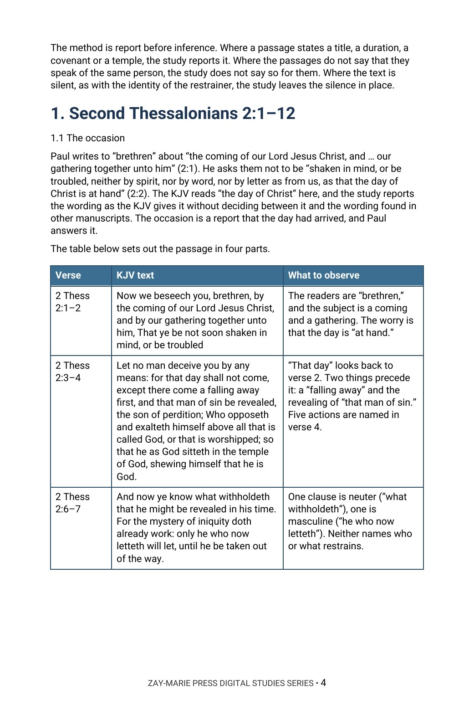

The Man of Sin
The Lawless One and the Antichrist Texts Read in Their Own Settings
What does each passage say about a final ruler, an abomination, or an antichrist, and what does each leave unsaid?
Paul’s “man of sin,” Daniel’s rulers, the abomination of desolation, the beast of Revelation, and John’s “antichrist” are often read as one figure under several names. Each passage has its own audience, its own words, and its own setting.
This study reads 2 Thessalonians 2:1–12 clause by clause, observes the rulers of Daniel, follows the abomination of desolation through Matthew, Mark, and Luke, reports the beast and the false prophet in Revelation, and reads the word “antichrist” in John’s letters. It then sets the passages side by side and holds to one order throughout: what the text says first, what it leaves unsaid second.
Read Each Passage in Its Own Setting
You will read 2 Thessalonians 2:1–12 in its own words, observe the rulers Daniel describes by their titles, words, and durations, and follow the phrase “abomination of desolation” into the Gospels. You will report the beast and the false prophet of Revelation as the book words them, read the word “antichrist” where John uses it, and compare the passages feature by feature before testing common readings against the text.
Readers who already own Study 10 (Daniel’s Seventieth Week), Study 7 (The Day of the Lord), or Study 61 (Revelation 12) will recognize adjoining ground. Study 10 reads Daniel’s seventieth week in relation to Daniel’s people, city, and timetable; this study reads Daniel only for the features of the rulers it names and does not take up the week’s timetable. Study 7 traces the Day of the Lord through judgment and restoration; this study reads the one paragraph of 2 Thessalonians 2 and does not settle the day’s wording. Study 61 identifies the figures of Revelation 12; this study reports the beast and the false prophet of Revelation 13 and later chapters, and does not take up the dragon, the woman, or the male child. The question this study alone answers: what does each passage say about a final ruler, an abomination, or an antichrist, and what does it leave unsaid?
How These Studies Relate
Study 74 reads the passages on a final ruler and the antichrist in their own settings. The studies below supply the neighboring ground it deliberately does not repeat.
Digital Studies
Study 10 — Daniel’s Seventieth Week Read Daniel’s seventieth week in relation to Daniel’s people, city, and timetable; Study 74 reads Daniel only for the features of the rulers.
Study 7 — The Day of the Lord Trace the prophetic Day of the Lord through judgment and restoration; Study 74 does not settle the wording of 2 Thessalonians 2:2.
Study 61 — Revelation 12 Identify the figures of Revelation 12 from the chapter’s own markers; Study 74 does not take up the dragon, the woman, or the male child.
Commentary Series
Prophetic Commentary Series, Volume 2 — The Beast and the False Prophet Argues who the second beast of Revelation 13 is and how the dragon, the beast and the false prophet work and end; Study 74 reports the final-ruler passages side by side, each in its own setting, without naming one person.
Prophetic Commentary Series, Volume 4 — Daniel’s Seventy Weeks Argues what Daniel 9:24–27 says of the prince who comes and the last week; Study 74 reports Daniel’s ruler passages beside 2 Thessalonians 2 and John’s antichrist texts without arguing a position beyond the text.
Gospel Commentary Series, Volume 3 — The Olivet Discourse Argues that the Olivet Discourse speaks to Israel of Israel’s tribulation, signs and King; Study 74 reports the abomination of desolation beside the other final-ruler passages without arguing a position beyond the text.
Follow Each Passage Through Its Own Wording
The Letter to the Thessalonians
Read 2 Thessalonians 2:1–12 clause by clause, noting what the readers are told not to believe, what they are told they already know, and how the passage speaks of those who perish.
The Restrainer Wording
Report the restrainer wording of 2:6–7 exactly as written and record what the text states and what it leaves unstated.
Daniel’s Rulers
Trace the rulers of Daniel 7, 8, 9, and 11 by their titles, their words, and their stated durations.
The Abomination of Desolation
Follow the phrase from Daniel into Matthew 24 and Mark 13, noting the place and the audience each passage names, and report Luke 21 neutrally.
The Beast and the Antichrist
Compare the beast and the false prophet of Revelation 13, 16, 17, and 19 with the use of the word “antichrist” in John’s letters, each in its own wording.
Passages Side by Side
Test common readings by setting titles, durations, covenant, temple, blasphemy, and worship side by side and recording where the passages agree and differ.
Read the Word in Its Context
2 Thessalonians 2:1–12
The occasion, the falling away, the revealing, and the restraint, in Paul’s own words.
Daniel 7:7–8, 20–25
The little horn, its words, and its stated duration.
Daniel 8:23–25
A king of fierce countenance and the people he addresses.
Daniel 9:26–27
The prince that shall come, the covenant, and the midpoint of the week.
Daniel 11:36–45
The king who exalts himself, and his end.
Matthew 24:15–22
The abomination of desolation, with its audience and its place.
Revelation 13
The beast from the sea and the beast from the earth, as John words them.
1 John 2:18–22
“Many antichrists,” and how John defines the word.
A Rule for Reading These Passages
A passage that shares a feature with another passage has not thereby named the same person.
Report who is addressed, what is said, and what the text leaves unsaid.
Preview the Study Before You Purchase
Click any page to enlarge it for reading.



Second Thessalonians 2:1–12
See how the study begins with the letter’s occasion and reads the passage in parts, in the text’s own words.
A Focused Study of the Final-Ruler Passages
16-Page Digital PDF
Approved cover and 15-page numbered interior.
6 Teaching Sections
A text-driven study from 2 Thessalonians 2 to the passages compared side by side.
Callout Boxes
Five callout boxes marking the study’s key working rules.
KJV Tables
Six tables setting out the key passages for observation.
Scripture-Tracing Exercise
Six guided traces through the passages the study relies on.
Guided Further Study
Four passage groups for deeper reading.
Review Questions
Five questions testing the study’s markers and method.
Final Synthesis Exercise
A written synthesis drawing the whole study together.
The Man of Sin
16-page digital PDF · For personal use